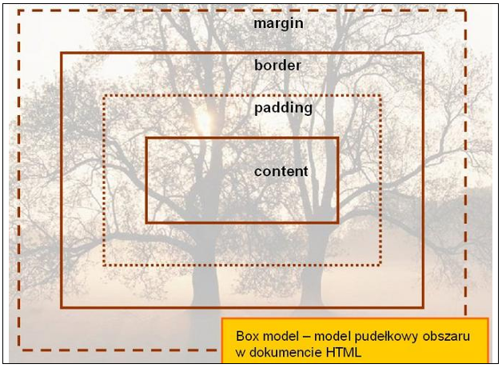
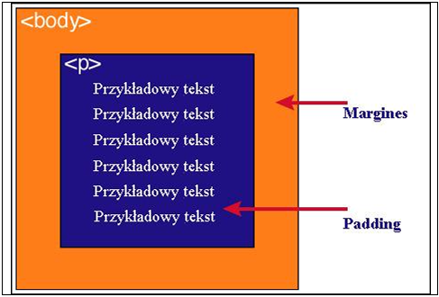

Każdy element w dokumencie HTML, otacza się prostokątnym obszarem zwanym pudełkiem (ang. Box model). Pudełko składa się z kilku warstw
| Zawartość | Opis |
| Content | zawartość elementu (np.: tekst, obrazek) |
| Padding | otaczające marginesy wewnętrzne, odstęp między obramowaniem i zawartością elementu |
| Border | obramowania wokół zawartości elementu, ma styl i kolor. |
| Margin | marginesy wokół ramki (margines zewnętrzny). Jest to pusty obszar wokół ramki, który nie ma koloru tła i jest przeźroczysty. |

